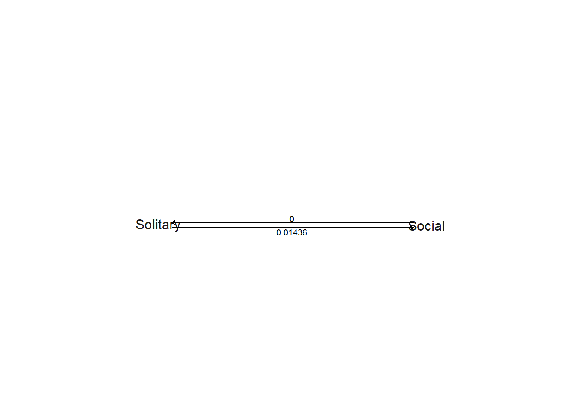
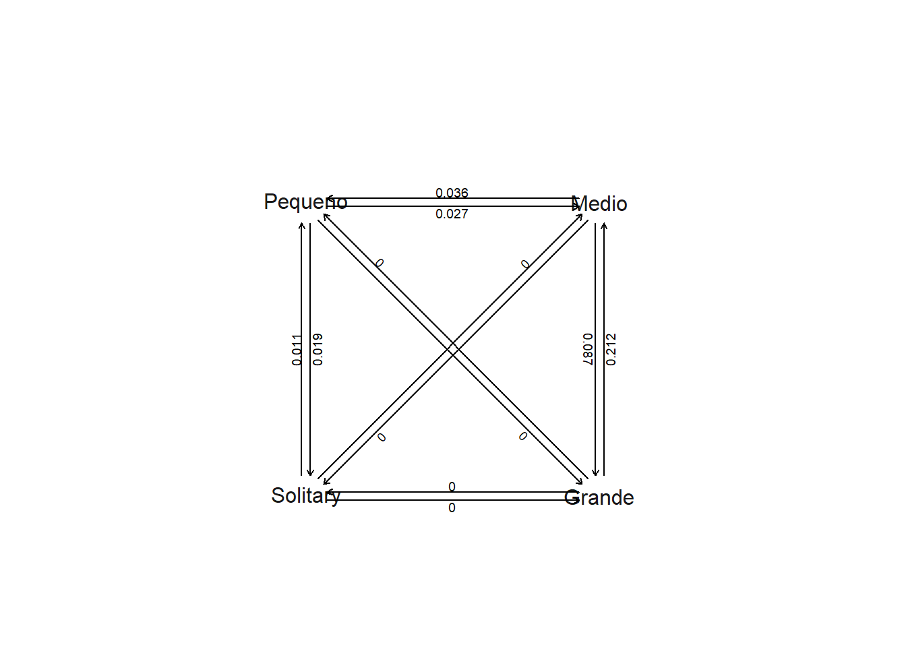
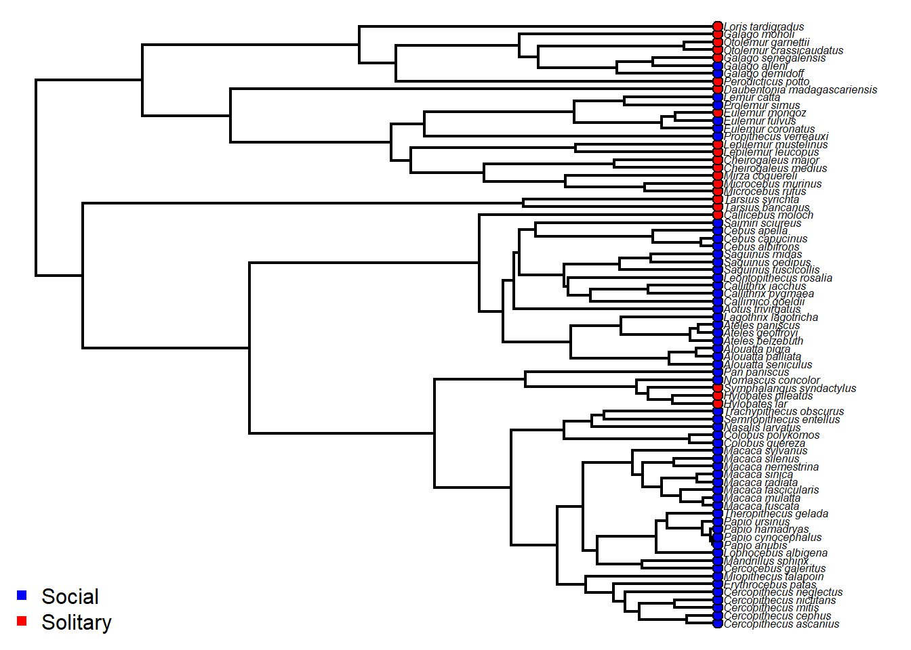

Vamos carregar os mesmos dados de primatas que usamos no capítulo anterior. Os ajustes de modelos seguem a mesma lógica. Aqui, vamos aplicar para fenótipos categóricos/discretos.
O conjunto de dados contém atributos binários e categóricos informando o tamanho do grupo social em primatas. Primeiro, vamos usar a variável binária, que possui dois estados: Solitary vs. Social. Mais de 4 ind = solitary Menos de 4 ind = social
Vamos usar a função fit.Discrete do pacote geiger para ajustar modelos que têm diferentes expectativas sobre as taxas de transição entre os estados fenotípicos.
22.1.1 Modelo de taxas iguais
Equal rates (ER) (ou all rates equal). Esse modelo tem um único parâmetro, a taxa de transição, que é igual entre qualquer par de estados.
No modelo simétrico (model=“SYM”), a taxa de mudança entre qualquer par de estados é a mesma independente da direção (estado 1 pra 2 é o mesmo que 2 pra 1; q12 = q21), mas a taxa de mudança difere entre estados (estado 1 pra 2 não é o mesmo que 1 pra 3; q12/q21 ≠ q13/q31 ≠ q23/q32). Note que, para uma variável binária, o modelo simétrico é exatamente igual ao modelo equal rates.
22.1.3 Modelos com todas as taxas diferentes
All rates different (ARD). Todas as taxas são diferentes. Para S estados, o número de parâmetros (S²-S) pode aumentar rapidamente dependendo de quantos estados houver.
Parece que a taxa de mudança de solitário para social (0.010) é maior do que a taxa de mudança de social para solitário (0.005).
22.1.4 Modelo irreversível
Nós também podemos ajustar um modelo em que as transições de solitário para social são possíveis, mas o reverso não é possível. Para isso, podemos criar uma matriz Q representando as transições entre estados.
matriz<-matrix(c(0,0,1,0),2,2,byrow=TRUE)colnames(matriz)=rownames(matriz)=c("Social","Solitary")matrizIR<-fitDiscrete(tree,binsocial,model=matriz)IR# Um warning é emitido quando qualquer parâmetro estiver nos limites (bounds) estabelecidos ou default.plot(IR,signif=5)

22.1.5 Comparação de modelos
Assim como nos modelos contínuos, podemos comparar os modelos usando AIC.
ER$opt$aiccARD$opt$aiccIR$opt$aiccaic.scores<-setNames(c(ER$opt$aicc,ARD$opt$aicc,IR$opt$aicc),c("ER","ARD","IR"))aic.scoresaicw(aic.scores) # Delta AICc e AICc weights
O modelo com taxas iguais de transição recebeu maior suporte, seguido do modelo ARD.
22.1.6 Exemplo com múltiplos estados
Modelos com várias categorias com mais de dois estados são implementados com exatamente a mesma lógica. Considere a variável grupo social construída com várias categorias. Menos de 4 ind = solitary Entre 4 e 10 ind = pequeno Entre 10 e 30 ind = medio Mais de 31 ind = grande
# ARDARD.grupo<-fitDiscrete(tree,catsocial,model="ARD") # Pode demorarARD.grupoplot(ARD.grupo)

Modelo Ordenado. Biologicamente, faz sentido que o tamanho do grupo social evolua de forma ordenada (e.g. solitário>pequeno>medio>grande). Podemos modificar a matriz Q para permitir transições apenas entre estes estados.
aic.scores<-setNames(c(ER.grupo$opt$aicc,SYM.grupo$opt$aicc,ARD.grupo$opt$aicc,OR.grupo$opt$aicc),c("ER","SYM","ARD","OR"))aic.scoresaicw(aic.scores) # Delta AICc e AICc weightsaic.w(aic.scores)
Neste caso, o modelo em que tamanho do grupo social pode mudar de maneira ordenada (solitário>pequeno>medio>grande & volta) teve muito mais suporte que os outros.
22.2 Reconstrução de estados ancestrais
Para reconstrução ancestral de estados discretos, o modelo subjacente será o Markoviano (Mk model). A função ace do pacote ape realizada estimativa para caracteres discretos.
# Visualização dos atributos{plotTree(tree,fsize=0.5,ftype="i")cores<-setNames(c("blue","red"),levels(binsocial))corestiplabels(pie=to.matrix(binsocial[tree$tip.label],levels(binsocial)),piecol=cores,cex=0.3)legend("bottomleft",legend=c("Social","Solitary"),pch=15,col=cores,bty="n")}

# Estimativa de estados ancestrais com modelo ERERanc<-ace(binsocial,tree,type="discrete",model="ER")ERanc# Estados ancestraisERanc$lik.anc
As linhas correspondem aos nós da árvore, e as colunas são as probabilidades de que o nó esteja no estado 1 ou 2 (social ou solitária). Note que os nós retornados pelo ace estão formatados em sequência numérica começando do 1, enquanto o formato phylo começa a dar nome aos nós seguindo a sequência n+1 (onde n é o número de espécies). É possível formatar os números das linhas para adequar ao formato phylo:
Existe outra alternativa às estimativas acima, que usa MCMC (Bayesiano) para amostrar histórias a partir de uma distribuição contendo muitos (milhares de) resultados (o que chamamos de distribuição posterior de probabilidades). Assim, os modelos são os mesmos usados anteriormente (ER, ARD), mas no final é obtida uma amostra de histórias que são únicas e não ambíguas, ou seja, cada etapa na árvore pode conter apenas um estado, ao invés da probabilidade de todos os estados para cada nó. Pra se aprofundar, leia Huelsenbeck, Nielsen, and Bollback (2003), Revell and Harmon (2022).
# Função make.simmap do phytoolsanc.tree<-make.simmap(tree,binsocial,model="ER")
# Plotando pizza sobre um mapa ao acaso#{plot(sample(anc.tree,1),fsize=0.5,ftype="i",colors=cores)#nodelabels(pie=pd$ace,piecol=cores,cex=0.5)#add.simmap.legend(colors=cores,prompt=FALSE,x=1,y=10)}
Poderíamos comparar as probabilidades posteriores do stochastic mapping com as probabilidades de estados diferentes pelo ace. As probabilidades devem se tornar as mesmas conforme o número de mapas estocásticos aumenta ao infinito.
22.3 Exercício - Modelos discretos
Carregue os mesmos dados: primate-data.txt primate-tree.txt Usando a variável categórica com múltiplos grupos sociais (catsocial), ajuste um modelo ordenado direcional onde o tamanho do grupo social pode aumentar mas nunca diminuir (i.e. Solitary>Pequeno>Medio>Grande mas sem retorno). Compare este modelo com os quatro anteriores e descubra qual recebe maior suporte.
Huelsenbeck, John P., Rasmus Nielsen, and Jonathan P. Bollback. 2003. “Stochastic Mapping of Morphological Characters.”Systematic Biology 52 (2): 131–58. https://doi.org/10.1080/10635150390192780.
Revell, Liam J., and Luke J. Harmon. 2022. Phylogenetic Comparative Methods in R. Princeton University Press.
Yang, Ziheng. 2006. Computational Molecular Evolution. Oxford: Oxford University Pres.